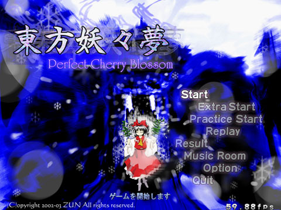
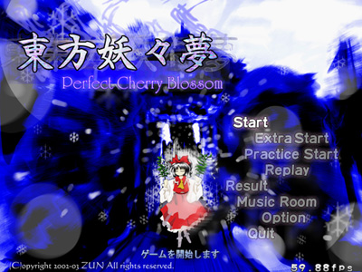
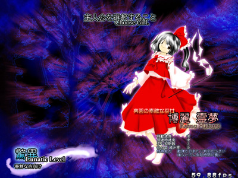
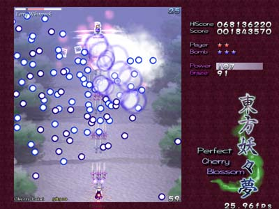
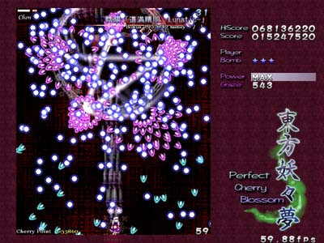
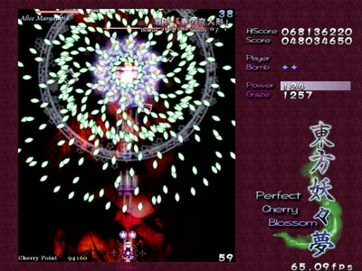
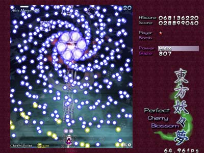
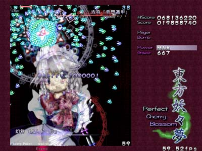
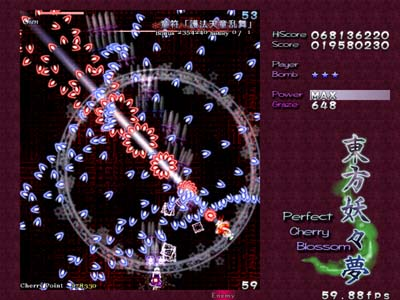

| 少女弾幕奇譚 「東方妖々夢 〜 Perfect Cherry Blossom.」 |
|---|
 |
|
辺境から暖かさが奪われ、永い冬が訪れた。 白銀の悪魔は幻想郷の人間を黙らせた。 時は経ち、次第に春の香りが訪れる頃になった。 いつもなら、幻想郷は白い吹雪から桜色の吹雪に変わるはずだったのだ。 そして春はまだ、来ない。 |
|
注意！ このゲームには強烈な弾幕シーンが含まれております。 俺は弾幕だろうがなんだろうが平気だぜ、という方にお奨めのゲームです 過去に弾幕の刺激によるめまいなどの症状の現れた方や、弾幕と言うだけ で強い嫌悪感を感じる方は、それなりの覚悟をしてくださいm(__)m |
| 最新版アップデートパッチダウンロード |
|
03/10/24更新 こちらを参照ください |
| 体験版ダウンロード |
|
03/07/12更新 こちらを参照ください |
| ジャンル |
|
弾幕シューティング（以下、弾幕ＳＴＧ） 弾幕ＳＴＧと普通のＳＴＧとでは、楽しむ所や目指すべき方向性が異なります。 弾避けやパターン化の攻略はもちろんのこと、普通のＳＴＧの楽しむところまで あえて犠牲にしてまでも、形状化されたパーティクルや弾避けのゲーム性を楽し むジャンルなのです。 弾幕ＳＴＧは「ＳＴＧとは異なる１ジャンル」と認識して頂けたら幸いです。 （実際、撃つこと（Shooting)はメインじゃないし(^^;） |
| コンセプト |
|
「東方妖々夢（とうほうようようむ） 〜 Perfect Cherry Blossom.」は、「東方紅魔郷」 の正当な続編に当たります。 ゲームをシステムで楽しむのではなく、雰囲気で楽しめる様なゲームを目指しています。 インパクトは弱くても、じわじわ来る面白さが感じられるように創りたいものです また、難易度は今回も選択式です。ノーマル以下は比較的易しい部類に入ると思います。 「強烈な避けれる弾幕」をお楽しみ頂けたら幸いです |
| 動作スペック |
|
OS Windows 98/ME/2000/XP CPU Pentium 以降 (500MHz 以上推奨) ビデオカード Direct3D 機能を搭載したビデオカード（Voodoo 除く) サウンド DirectSound に対応したサウンド その他あるとちょっとお得なもの パッド SC-88Pro 相当の MIDI音源 前作「東方紅魔郷」と同じくらいか、やや高いです。 前作が動かなかったハードでは動くことは無いと思われますので注意。 |
| ゲーム内容 |
|
全６＋α面の縦スクロール弾幕ＳＴＧです。 弾に当たれば死に、残機が無くなればゲームオーバーです。 |
| マニュアル |
| は、こちら |
| リリース予定時期 |
|
製品版 2003年夏頃予定 |
| パッケージ内容 |
|
体験版Plus ３面までプレイ可能、また、なんかのおまけを付ける予定あり 体験版 ３面までプレイ可能だが、曲は MIDI版しかありません 製品版 完成品です |
| 相変わらずのスナップショット（開発中に付き、完成版とイメージが異なる場合があります） | |
|---|---|
 |  |
 |  |
 |  |
 |  |
| なんと、変りばえのしないって素晴らしい(^^; | |